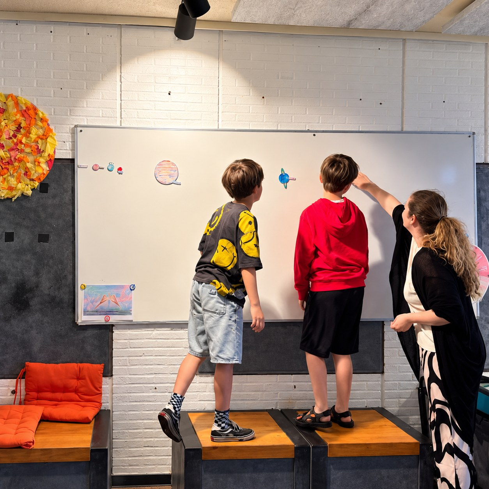

Voor nieuwsgierige koppen van 6 tot 12 jaar
Ruimte voor nieuwsgierigheid,
talent en uitdaging
Connectopia vzw begeleidt kinderen die meer uitdaging, begrip of ruimte nodig hebben, in Hasselt en in Genk. Een gratis proefles mag altijd eerst.




Wat er dit schooljaar te doen is Instappen kan nog, ook midden in het jaar.
🚀
Externe plusklas
- Dinsdag, 9u – 15u
- Atheneum Hasselt, Kleine-Breemstraat 33
- Drie trajecten van telkens tien dagen
€50 per dag €60
🎓
Pluswerking woensdag
- Woensdagvoormiddag, 9u – 12u
- T2 Campus, Thor Park 8040, Genk
- Schoolse uitdaging en examencommissie
€25 per 3 uur €30
🎨
Pluswerking zaterdag
- Zaterdagvoormiddag, 9u – 12u
- Level X 28, Vilderstraat 28, Hasselt
- Creativiteit en techniek samen
€25 per 3 uur €30
⚙️
Young Engineers
een tak van Connectopia vzw
- Dinsdag, woensdag of zaterdag
- Hasselt of Genk, één les duurt 1u15
- Met LEGO® en techniek echte dingen bouwen
€20 per les €25
Vakantiekampen in elke schoolvakantie
Herfst · Hasselt
ma 2 & di 3 november
Level X 28, Vilderstraat 28
Thema: Young Engineer Held
Thema: Young Engineer Held
Herfst · Genk
wo 4 & do 5 november
T2 Campus, Thor Park 8040
Thema: Creatieve duizendpoot
Thema: Creatieve duizendpoot
Kerstvakantie
21, 22 en 23 december
28, 29 en 30 december
28, 29 en 30 december
In Hasselt of in Genk, jij kiest
Elke dag van 9u tot 15u
●
€40 per dag
●
6 tot 12 jaar
●
Plaatsen zijn beperkt
Eerst eens proeven? De proefles is gratis
Je kind mag vrijblijvend een keer meedoen, zonder dat je iets vastlegt.
Nieuw: ons eigen oefenplatform
Oefenen op maat, van de lagere school tot de derde graad. Eén hoofdstuk per vak is gratis.